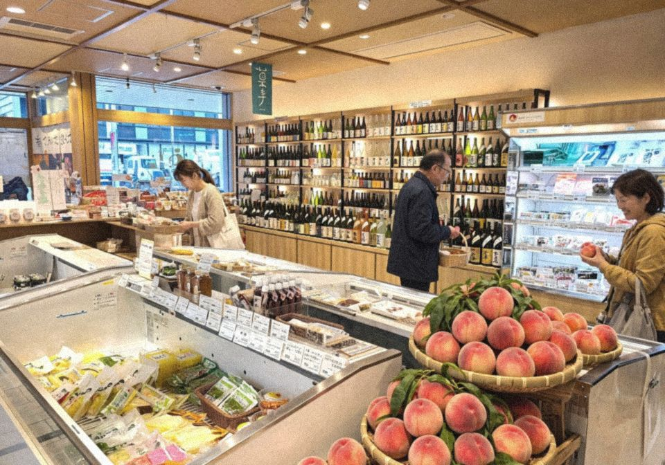
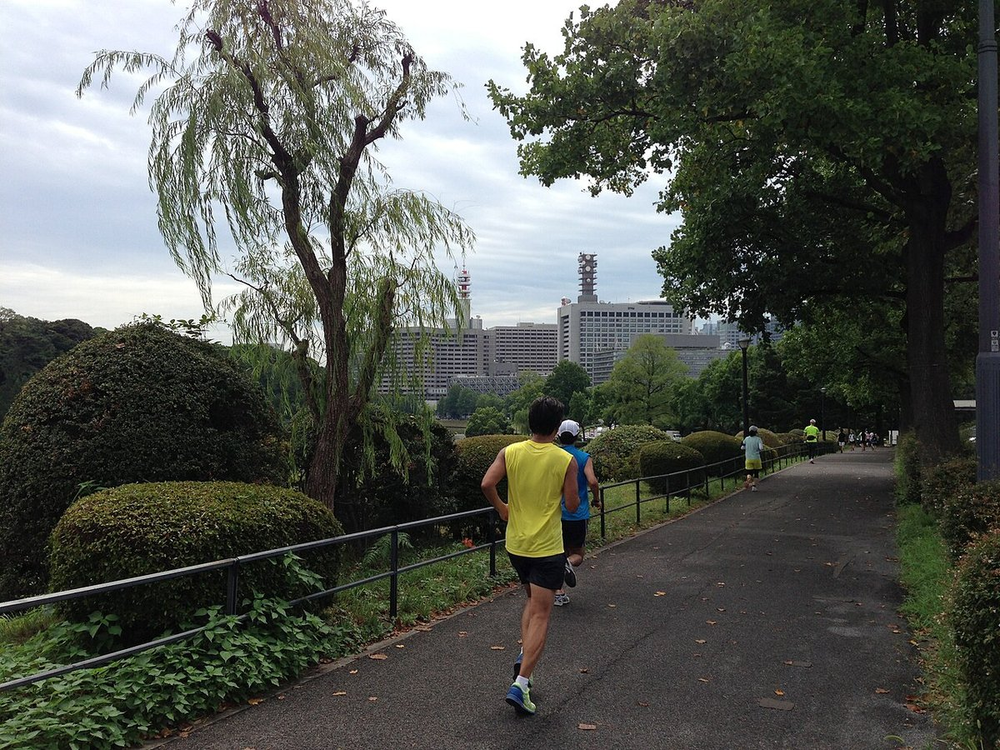

週末活動、祭典、展覽和散步路線。

週末去哪 · AYAKA · 2026.11.16
福島出身的編輯，帶你逛福島在東京的家
週末去哪 · 腸鍋 · 2026.11.16
大叔的週末第二攤：ヒトカラ（一人カラオケ）入門

早上跑步、晚上居酒屋——先講早上這一半
週末去哪 · YU · 2026.11.15
從日暮里出站，給商店街留一點不用趕路的時間。
週末去哪 · 腸鍋 · 2026.11.15
一圈約五公里，先把寄物和跑完的時間算進去。
 住日本幹嘛啦
住日本幹嘛啦